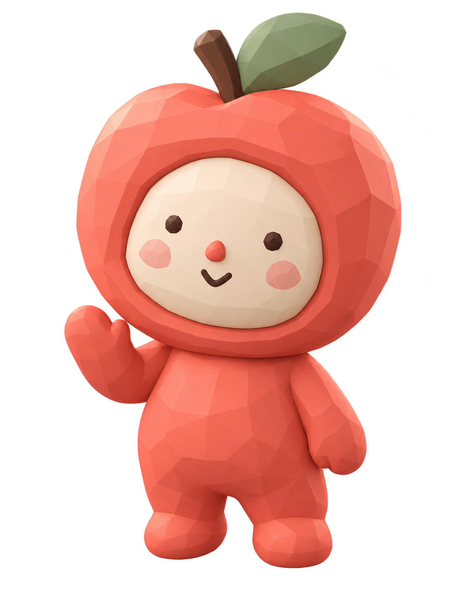

A little more
in tune.
Your health, a little clearer.
A companion that feels a little closer.
Thoughtfully simple UI.

Soft edges.
Real character.
A polished, faceted apple suit. A tiny button nose. A friendly wave. Apollo brings warmth at the moments that need it; your health information gets the rest of the room.
A little more in tune.
Health comes first.
Large readings, visible timestamps, quality labels, and a clear next step.
A friend, when it helps.
Apollo greets and guides. No floating mascot button over your dashboard.
Warmth without noise.
Coral for focus, ivory for breathing room, soft facets for personality.
A familiar face.
For every moment.
Same coral apple. Same button nose. A head-only expression set for greetings, guidance, a little patience, and the joy of finishing.
Finished. Focused.
Ready to try again.
A smile celebrates completing the check-in. Calm eyes make space for concentration. A gentle wink makes a retry feel okay.
Every little moment,
considered.
From the first hello to the last saved reading. Select any screen to explore the connected prototype.
Illustrative data · design prototype · no live measurementsDelight on the surface.
Care in the details.
Temperature before flash. The guided check-in puts the thermal exam first. Phone readiness and cooling states stay visible.
20 seconds. 60 + 90 seconds. Heart-rate capture and temperature preparation follow the timings in the existing Android code.
Honest results. The prototype reports a forehead warming rate, not a calibrated body temperature. Poor heart-rate signals never become a large, misleading number.
Clear scope. Today and the exam flows map to existing code. Onboarding, Journal, Trends, companion, and data controls are proposed product screens from the design plan.